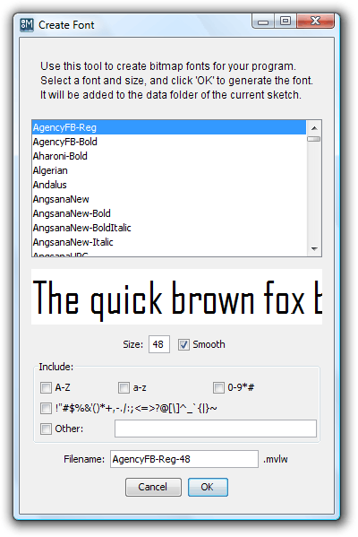

Reference
Reference

The Mobile Processing environment is based on original Processing Environment and shares most of the same features. Refer to the Processing.org Environment documentation to begin. The following are some differences:
1. Mobile Processing currently does not support alternative rendering modes.
2. The Settings dialog contains a new Mobile tab, which is used to specify the location of the wireless toolkit for building applications and additional options for advanced users.

3. Bitmapped fonts can significantly increase the size and runtime memory needs of an application. The Create Font dialog allows you to select only the specific characters you need to display in your application. To specify specific characters, check the "Other:" box and enter them in the text field.

4. Mobile Processing maintains separate version information for the PDE, Core APIs, documentation, and libraries. Run "Check for updates..." to download and install any new versions. You can view the current version information in the About dialog and compare them to the versions listed on the Download page.

5. EXPERIMENTAL: If you are being a proxy and cannot run "Check for updates...", you can set additional properties in your preferences file. Find the location of your preferences file by opening "Preferences" from the "File" menu and looking at the path specified at the bottom of the dialog. Add the following properties to your preferences file, depending upon your proxy configuration:
http.proxyHost
http.proxyPort
socksProxyHost
socksProxyPort
java.net.socks.username
java.net.socks.password
Refer to the following documentation links at Sun Microsystems for more information on Java and network proxies:
Java Networking and Proxies
Networking Properties